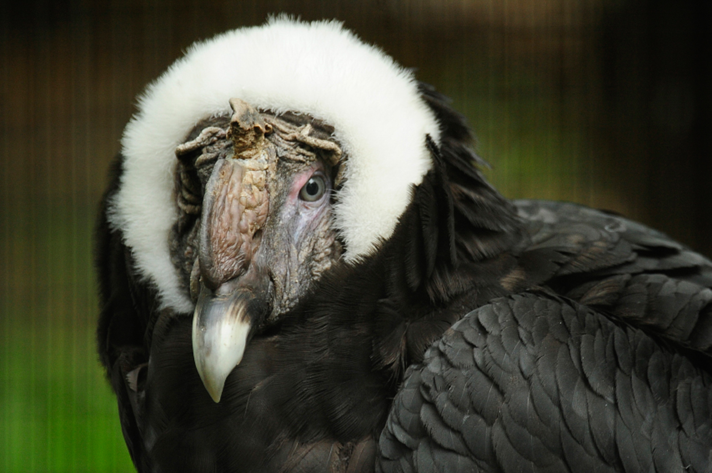

El cóndor andino es reconocido como una de las aves voladoras más grandes del planeta, llegando en ocasiones a ser superado en envergadura solamente por el albatros viajero y el real, si bien el cóndor es más alto, más robusto y más pesado que aquellos. Los adultos llegan a medir hasta 142 cm de longitud (desde el pico a la punta de la cola), 1 m de estatura, y de 270 hasta 330 cm de envergadura,1213 con una media de 283 cm,14 y pesan de 11 a 15 kg los machos y de 8 a 11 kg las hembras. Poseen la cabeza desnuda, de color generalmente rojizo, aunque el mismo puede cambiar según el estado de ánimo del animal; pico de borde muy cortante y terminado en gancho. Las alas son largas y anchas, y las patas, no prensiles, poseen uñas cortas y poco curvas, y con la inserción del dedo posterior elevada. Las mismas están adaptadas para la marcha y para la sujeción de la carroña. Alcanzan la madurez sexual aproximadamente a los ocho años. El plumaje juvenil de ambos sexos es de color marrón hasta alcanzar en mudas sucesivas el característico plumaje negro-azabache de los adultos. Una ancha banda blanca resalta en el dorso de las alas y un nítido collar blanco no completamente cerrado al frente, protege la desnuda piel del cuello.
Los machos presentan una cresta o carúncula y pliegues en la cara y cuello que aumentan de tamaño con la edad. Alcanzan mayor peso y envergadura que las hembras y sus ojos son de color café. Las hembras no poseen cresta aunque al igual que los machos presentan pliegues. Sus ojos son de color rojizo. Es también una de las aves que vuela a mayores alturas, el cóndor andino puede volar utilizando las corrientes térmicas ascendentes verticales de aire cálido y pueden alcanzar hasta los 6500 msnm16 y después puede planear por cientos de kilómetros casi sin mover las alas extendidas, el cóndor consume muy poca energía y gracias a su denso plumaje puede soportar climas gélidos
VOLVER A LA PÁGINA PRINCIPAL